Обучение на нейропсихолога — это путь к востребованной профессии, сочетающей клиническую нейропсихологию, нейропсихологическую диагностику и коррекцию нарушений психических функций. Мы составили рейтинг программ, где профессиональная переподготовка включает освоение нейропсихологических методик, клинической практики и основ детской нейропсихологии. Обучение проходит в разных форматах, включая дистанционный формат с гибким графиком. Курсы включают теоретический материал, практические задания и современные методы коррекции. По окончании обучения выдается диплом, подтверждающий квалификацию клинического психолога или детского нейропсихолога.
Информация обновлена:
ТОП онлайн-программ по нейропсихологии
- 🏆 Детская нейропсихология – Московский институт психологии (по промокоду kursy скидка 🎁 10%)
- 🏆 Детская нейропсихология – Онлайн институт Smart
- 🏆 Психолого-педагогическое сопровождение образовательного процесса в ДОУ с нейропсихологической диагностикой и коррекцией – НАДПО (по промокоду onlinekursy действует скидка 🎁 5%)
- Учитель-логопед с дополнительной специализацией в области детской нейропсихологии – АНО «НИИДПО»
- Детская нейропсихология – МИПО (по промокоду onlinekursy действует скидка 🎁 10%)
- Детская нейропсихология – MITM
- Детская нейропсихология – ИПО
- Практическая нейропсихология – ЦАППК (по промокоду onlinekursy действует скидка 🎁 5%)
- Нейропсихологическая диагностика и коррекция в детском возрасте – НЦРДО (по промокоду onlinekursy действует скидка 🎁 5%)
- Детская нейропсихология – ЭКОДПО
- Детская нейропсихология – АПОК
- Онлайн-курсы детской нейропсихологии и психокоррекции – Международная школа профессий
- Нейропсихология – МИП (по промокоду kursy скидка 🎁 10%)
- Нейропсихология – MITM
- Нейропсихология – МИПО (по промокоду onlinekursy действует скидка 🎁 10%)
- Нейропсихология: диагностика, коррекция, реабилитация – ИПО
- Психолого-педагогическое сопровождение образовательного процесса. Нейропсихологическая диагностика и коррекция в детском возрасте – НАДПО (по промокоду onlinekursy действует скидка 🎁 5%)
- Нейропсихологическая диагностика и коррекция в детском возрасте – НАДПО
- Нейропсихология детского возраста – НАДПО (по промокоду onlinekursy действует скидка 🎁 5%)
- Специальное (дефектологическое) образование с детской нейропсихологией — АНО «НИИДПО»
- Нейропсихология детского возраста (144 часа) – АНО «НИИДПО»
- Нейропсихология детского возраста – НЦРДО (по промокоду onlinekursy действует скидка 🎁 5%)
Бесплатные курсы на нейропсихолога
- ДЕТСКИЙ ЛОГОПЕД (Бесплатные видеокурсы) – Бесплатные онлайн курсы для логопедов, нейропсихологов, дефектологов, педагогов и родителей
- Как найти своё предназначение и любимое дело – Нейрософия
- Основы нейропсихологии: диагностика и реабилитация, бесплатно – Московский институт психоанализа
Отличительные преимущества каждой дистанционной программы обучения по нейропсихологии
| № | Курс и школа | Преимущества | |
|---|---|---|---|
| 🥇 | Детская нейропсихология — МИП | 1080 часов, аккредитация ОППЛ, сильная практика, диплом, доступ к библиотеке | Перейти |
| 🥈 | Детская нейропсихология – Smart | Карьерная программа, бонус-курсы, доступ навсегда, супервизии, международный диплом | Перейти |
| 🥉 | Психолого-педагогическое сопровождение в ДОУ – Национальная академия ДПО | 1570 ч, большая академия, работа с ДОУ, доступ к библиотекам, акцент на коррекцию | Перейти |
| 4 | Учитель-логопед + нейропсихология – АНО «НИИДПО» | Двойная квалификация, стажировка, 13 000+ вебинаров, сопровождение | Перейти |
| 5 | Детская нейропсихология – МИПО | Диплом в ФИС-ФРДО, гибкий график, лицензия, карьерный центр | Перейти |
| 6 | Детская нейропсихология – MITM | Цена от 5 000₽/мес, 890 часов, Telegram-поддержка, налоговый вычет | Перейти |
| 7 | Детская нейропсихология – ИПО | Цена от 2 299₽/мес, практика, карьерный центр, гибкий формат | Перейти |
| 8 | Практическая нейропсихология – ЦАПППК | 850 часов, ФИС-ФРДО, бессрочный доступ, карьерное сопровождение | Перейти |
| 9 | Нейропсихологическая диагностика – НЦРДО | 35 300₽, 620 часов, 36 мес. рассрочка, ЛитРес, супервизии, HR-помощь | Перейти |
| 10 | Детская нейропсихология – ЭКОДПО | Цена от 29 980₽, до 555 часов, бессрочный доступ, без вступительных | Перейти |
| 11 | Детская нейропсихология – АПОК | Индивидуальные программы, ускоренное обучение, возврат средств | Перейти |
| 12 | Онлайн-курсы нейропсихологии – МШП | Краткий курс (8 недель), психокоррекция, игровая терапия, доступ за 20 500₽ | Перейти |
| 13 | Нейропсихология – МИП | 1600 ч, диплом с международным приложением, практика, кейсы | Перейти |
| 14 | Нейропсихология – MITM | 890 часов, клинический фокус, супервизии, Telegram-поддержка | Перейти |
| 15 | Нейропсихология – МИПО | До 10 мес, диплом ФИС-ФРДО, поддержка от менторов, soft skills | Перейти |
| 16 | Нейропсихология: диагностика и коррекция – ИПО | 872 часа, диплом, карьерный центр, акцент на детскую и клиническую практику | Перейти |
| 17 | Психолого-пед. сопровождение. Нейропсихология – НАДПО | 1050+ часов, работа с РАС/СДВГ, ФГОС, гибкий график, опытные преподаватели | Перейти |
| 18 | Нейропсихологическая диагностика – НАДПО | 400 ч, диплом, супервизии, 30% практики, быстрая переподготовка | Перейти |
| 19 | Нейропсихология детского возраста – НАДПО | 200 ч, удостоверение, преподаватели с учёными степенями, гибкая оплата | Перейти |
| 20 | Специальное образование с нейропсихологией – АНО НИИДПО | 2 квалификации, участие в вебинарах, диплом, поддержка по трудоустройству | Перейти |
| 21 | Нейропсихология детского возраста (144 ч) – АНО НИИДПО | Удостоверение, 13 000 вебинаров, мобильная платформа, мягкий вход | Перейти |
| 22 | Нейропсихология детского возраста – НЦРДО | Удостоверение, аудиолекции, ЛитРес, быстрая переподготовка, отзывчивые кураторы | Перейти |
1. 🏆 Детская нейропсихология — Московский институт психологии
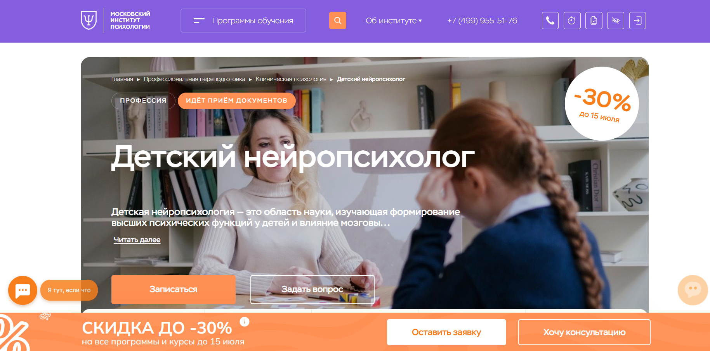
- ✅ Официальный сайт: mip.institute
- 💸 Цена: 97 925 ₽ (со скидкой 30%).
- 💳 Рассрочка: 8 200 ₽/мес на 12 месяцев, без переплат.
- 📚 Формат: дистанционный формат — лекции, тесты, практические задания, супервизии, доступ к библиотеке.
- ⏳ Продолжительность: 8 месяцев, 1080 часов обучения.
- 📜 Документ: диплом о профессиональной переподготовке.
- 📝 Трудоустройство: подготовка к частной практике, повышение квалификации, официальный диплом для ведения психологической практики.
- 🔷 Для кого подходит курс: начинающим специалистам, практикующим без диплома, желающим освоить нейропсихологию детского возраста с нуля.
Особенности:
Программа подготовки по детской нейропсихологии реализуется в дистанционном формате, что удобно для совмещения с основной занятостью. Студенты осваивают методы диагностики высших психических функций у детей, изучают клиническую нейропсихологию, проходят практику на реальных кейсах. Курс включает поддержку кураторов, прямое взаимодействие с преподавателями и работу в профессиональном сообществе. По завершении обучения выдается диплом установленного образца, с которым можно вести деятельность клинического психолога. Программа соответствует профессиональным стандартам и аккредитована в ОППЛ. Участники получают навыки, востребованные в образовательных и медицинских организациях, а также для частной практики.
Чему учатся студенты:
- Проводить нейропсихологическую диагностику и клиническую беседу с детьми
- Применять методы нейропсихологической коррекции и разрабатывать индивидуальные программы
- Осуществлять нейропсихологическую реабилитацию после травм и нарушений развития
- Использовать игровые и цифровые технологии в психологической практике
- Сотрудничать с родителями и педагогами при сопровождении детей
- Грамотно составлять заключения по результатам диагностики
Преподаватели:
- Волченкова Анастасия Александровна — кандидат психологических наук, доцент, клинический нейропсихолог, гештальт-терапевт
- Стибунов Алексей Васильевич — клинический психолог, преподаватель, первый проректор института
Преимущества:
- Официальный диплом, признаваемый в России и за рубежом
- Обучение полностью онлайн, подходит для любой точки мира
- Доступ к библиотеке и обучающим материалам в течение курса
- Интенсивная практика с реальными кейсами
- Преподаватели — действующие специалисты с опытом до 25 лет
- Возможность вступить в профессиональное сообщество психологов
- Оптимизированный график для совмещения с работой
- Поддержка кураторов и супервизоров на протяжении всего обучения
Отзывы учеников:
В отзывах студенты хвалят насыщенное содержание программы, понятную структуру курсов и поддержку преподавателей. Особо отмечают практическую направленность и реальную возможность начать работать по новой профессии после окончания курса. Высокую оценку также получает гибкий дистанционный формат, который позволяет учиться в свободное время.
Перейти на официальный сайт курса2. 🏆 Детская нейропсихология – Онлайн институт Smart
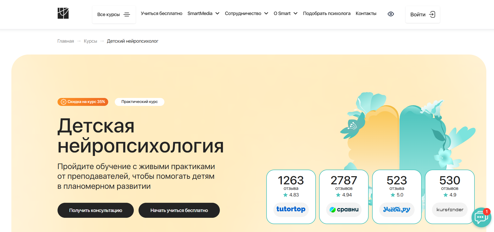- ✅ Официальный сайт: smart-inc.ru
- 💸 Цена: от 29 900 ₽ (со скидкой, до 184 900 ₽)
- 💳 Рассрочка: от 2 492 ₽/мес. на 3, 6, 12 или 24 месяца, первый платёж через 1 месяц
- 📚 Формат: дистанционный формат, видеоуроки, домашние задания, тесты, практические занятия, супервизии
- ⏳ Продолжительность: от 4 до 11 месяцев, 150–620 часов
- 📜 Документ: удостоверение или диплом о профессиональной переподготовке
- 📝 Трудоустройство: помощь в старте карьеры, предоставление клиентов для практики, участие в программе SmartMental
- 🔷 Для кого подходит курс: детским и клиническим психологам, педагогам, специалистам по реабилитации, родителям, желающим освоить методы нейропсихологической помощи детям
Особенности:
Программа включает нейропсихологическую диагностику, клиническую нейропсихологию и методы нейропсихологической коррекции. Обучение ведется в дистанционной форме через образовательную платформу, доступную 24/7. В курс входят практические занятия: групповые практикумы, супервизии, мастер-группы и сессии «вопрос-ответ». Курсы проходят в удобных форматах обучения, что позволяет совмещать учебу с работой. После окончания курса выдается диплом, соответствующий требованиям профессиональных стандартов. Программа обучения ориентирована на развитие практических навыков в рамках нейропсихологического подхода и соответствует актуальным требованиям сферы нейропсихологии детского возраста.
Чему учатся студенты:
- Проводить нейропсихологическую диагностику и анализ высших психических функций
- Использовать современные нейропсихологические методики и инструменты
- Разрабатывать индивидуальные коррекционные программы
- Применять методы диагностики и коррекции при СДВГ, ЗПР и других нарушениях психического развития
- Вести работу с родителями и педагогами
- Проводить нейропсихологическую реабилитацию детей
Преподаватели:
- Кристина Юст — клинический психолог, детский нейропсихолог, 6 лет практики, более 150 диагностик в год
- Алиса Депцова — преподаватель с опытом и практикой в клинической психологии
Преимущества:
- Возможность обучения в дистанционном формате по индивидуальному графику
- Доступ к материалам курса навсегда
- Поддержка кураторов и тьюторов на всех этапах обучения
- Включение в профессиональное сообщество и карьерную программу
- Официальная лицензия и международное признание диплома
- Программа соответствует требованиям ОППЛ и АППП
- Формирование набора профессиональных и практических навыков
- Бонус: курс по психологии в подарок
Отзывы учеников:
Студенты часто отмечают сильную практическую направленность, чёткую структуру подачи материалов и постоянную поддержку преподавателей. Особенно выделяют качество обратной связи и возможность сразу применять знания в работе.
Перейти на официальный сайт курса3. 🏆 Психолого-педагогическое сопровождение образовательного процесса в ДОУ с нейропсихологической диагностикой и коррекцией – Национальная академия дополнительного профессионального образования
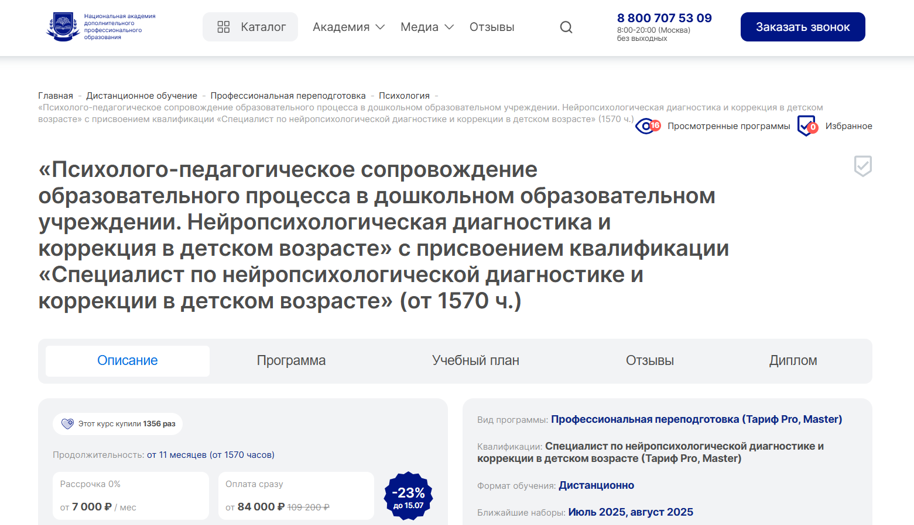
- ✅ Официальный сайт: nadpo.ru
- 💸 Цена: от 84 000 ₽ (скидка 23%, полная цена — 109 200 ₽).
- 💳 Рассрочка: 0% на 24 или 36 месяцев, ежемесячный платеж от 7 000 ₽.
- 📚 Формат: дистанционные видеоуроки, тесты, практические задания, доступ к библиотекам ЛитРес и БиблиоКлуб, онлайн-поддержка.
- ⏳ Продолжительность: от 11 месяцев (от 1570 часов).
- 📜 Документ: диплом о профессиональной переподготовке (тарифы Pro и Master).
- 📝 Трудоустройство: консультации с HR-наставником, предложения от партнёров ещё во время обучения.
- 🔷 Для кого подходит курс: педагогам, клиническим и детским психологам, логопедам, дефектологам, а также тем, кто хочет получить профессию детского нейропсихолога.
Особенности:
Программа ориентирована на освоение методов нейропсихологической диагностики и коррекции в дошкольной среде. Обучение проходит полностью онлайн в удобном дистанционном формате, позволяющем совмещать курс с работой. Слушатели изучают нейропсихологию детского возраста, применяют современные нейропсихологические методики и проводят коррекционные занятия под руководством опытных преподавателей. Доступ к цифровым библиотекам и практическим материалам начинается с первых дней обучения. Диплом соответствует государственным профессиональным стандартам. Академия входит в тройку лидеров среди поставщиков дистанционных образовательных курсов, а слушатели получают не только теоретическую базу, но и практические навыки, востребованные в профессии нейропсихолога.
Чему учатся студенты:
- Применять методы нейропсихологической диагностики для оценки психических функций у детей
- Разрабатывать индивидуальные программы коррекции нарушений
- Проводить нейропсихологическую коррекцию при РАС, СДВГ, умственной отсталости
- Использовать современные нейропсихологические методики в образовательном процессе
- Организовывать сопровождение детей с нарушениями высших психических функций
Преподаватели:
- Кузьмина Наталия Анатольевна — практикующий клинический психолог, автор учебных программ по нейропсихологии
- Петрова Ольга Евгеньевна — нейропсихолог, преподаватель с опытом более 15 лет, эксперт в области детской нейропсихологии
- Литвиненко Сергей Викторович — кандидат психологических наук, консультант и методист по психолого-педагогическому сопровождению
Преимущества:
- Обучение соответствует требованиям ФГОС
- Большой объём практических занятий с обратной связью
- Доступ к библиотекам и учебным материалам без доплат
- Гибкий график, подходящий для совмещения с работой
- Рассрочка на выгодных условиях без процентов
- Помощь в трудоустройстве сразу после окончания курса
- Диплом о профессиональной переподготовке установленного образца
- Платформа работает без выходных и доступна круглосуточно
Отзывы учеников:
Студенты отмечают доступность материалов и высокую организацию учебного процесса. Положительно отзываются о преподавателях и поддержке кураторов. Многие подчеркивают, что уже в процессе обучения начали применять полученные знания в практике. Особо ценят удобную систему дистанционного обучения и возможность получить востребованную квалификацию в сфере детской нейропсихологии.
Перейти на официальный сайт курса4. Учитель-логопед с дополнительной специализацией в области детской нейропсихологии – АНО «НИИДПО»
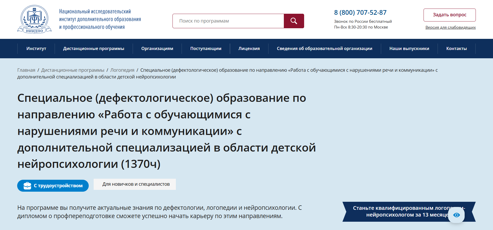
- ✅ Официальный сайт: niidpo.ru
- 💸 Цена: 80 000 ₽ ( скидка 10 400 ₽).
- 💳 Рассрочка: от 6670 ₽/мес. на 12 месяцев без переплат и первого взноса, возможна оплата через Яндекс PAY.
- 📚 Формат: дистанционный формат обучения, включает видеоуроки, презентации, тесты, практические задания и доступ к библиотеке из 13 000+ вебинаров.
- ⏳ Продолжительность: 53 недели (возможность ускоренного обучения — 29 недель).
- 📜 Документ: выдается диплом о профессиональной переподготовке, признается аттестационными комиссиями и работодателями.
- 📝 Трудоустройство: стажировка в логопедическом центре, поддержка карьерного центра, рекомендательное письмо, вебинары и сопровождение специалистов.
- 🔷 Для кого подходит курс: педагогам, логопедам, психологам, родителям детей с речевыми трудностями, специалистам социальной сферы и начинающим детским нейропсихологам.
Особенности:
Курс сочетает обучение по нейропсихологическому подходу и логопедии в дистанционной форме, что удобно для тех, кто совмещает учебу с работой. Программа разработана в соответствии с профессиональными стандартами и ориентирована на применение клинической нейропсихологии в работе с детьми. Программа насыщена практическими модулями и кейсами с реальными ситуациями из кабинетов специалистов. Учащиеся получают доступ к записям занятий, участвуют в супервизиях и взаимодействуют с экспертами. Обучение проходит на платформе, разработанной участником проекта «Сколково». После окончания курса слушатели получают диплом установленного образца, подтверждающий их профессиональную квалификацию.
Чему учатся студенты:
- Проводить нейропсихологическую диагностику детей
- Оценивать речевое развитие и выявлять патологии
- Проводить логопедическую коррекцию и запуск речи у неговорящих детей
- Применять методы нейропсихологической коррекции
- Разрабатывать индивидуальные программы помощи детям
- Проводить занятия по устранению нарушений чтения и письма
- Работать в мультидисциплинарной команде
Преподаватели:
- Шайденкова Татьяна Николаевна — кандидат педагогических наук
- Бойцова Ирина Александровна — практикующий врач-невролог
- Лебедева Надежда Николаевна — практикующий учитель-логопед
Преимущества:
- Дистанционное обучение с доступом к материалам в любое время
- Стажировка в профильном центре с получением рекомендации
- Поддержка карьерного наставника на всем пути
- Скидка 11% при ранней оплате
- Бессрочный доступ к учебным материалам после окончания курса
- Супервизия и обратная связь от специалистов
- 13000+ вебинаров на разные темы в рамках курса
- Доступ к электронной библиотеке biblioclub.ru
Отзывы учеников:
Студенты отмечают простую структуру курса, насыщенность учебных материалов и активную обратную связь от преподавателей. Особенно ценятся практические кейсы, возможность стажировки и гибкий график обучения. Многие хвалят доступную форму обучения и профессионализм преподавательского состава.
Перейти на официальный сайт курса5. Детская нейропсихология – Московский Институт Профессионального Образования
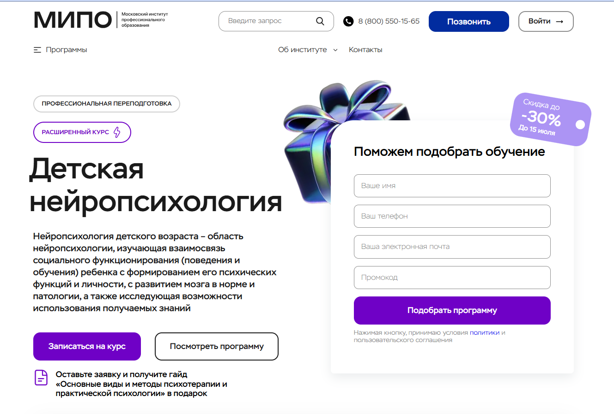
- ✅ Официальный сайт: mipo.msk.ru
- 💸 Цена: от 48 620 ₽ до 78 666 ₽ (в зависимости от тарифа, скидка до 30% )
- 💳 Рассрочка: от 2 027 ₽ в месяц на 24 месяца без переплат
- 📚 Формат: дистанционный формат обучения — вебинары, видеоматериалы, тесты, практические задания, работа с куратором
- ⏳ Продолжительность: от 6 до 10 месяцев, 872 академических часа
- 📜 Документ: диплом о профессиональной переподготовке с регистрацией в ФИС-ФРДО
- 📝 Трудоустройство: центр карьеры, поддержка менторов и кураторов, сертификаты и дополнительные курсы
- 🔷 Для кого подходит курс: начинающим, действующим специалистам, тем, кто хочет применять знания для себя и близких
Особенности:
Обучение проходит полностью онлайн с поддержкой кураторов, методистов и менторов. Формат позволяет совмещать освоение новой профессии с текущей работой. Дистанционное обучение включает в себя реальные кейсы, видеоуроки, обратную связь и тестирование по каждой теме. Программа охватывает нейропсихологическую диагностику, методы коррекции нарушений психических функций, работу с родителями. Диплом после завершения обучения официально вносится в федеральный реестр, подтверждая квалификацию. Студенты получают доступ к платформе с лекциями и дополнительными материалами. В курс включены бонусные программы и практикумы. Образование лицензировано, дипломы котируются в России и за рубежом.
Чему учатся студенты:
- Проводить нейропсихологическую диагностику детей и подростков
- Анализировать особенности развития детского мозга и психики
- Разрабатывать индивидуальные программы нейропсихологической коррекции
- Применять методы диагностики и коррекции нарушений высших психических функций
- Осуществлять взаимодействие с родителями и сопровождение ребенка
Преподаватели:
- Урывчикова Татьяна Геннадьевна — клинический психолог, нейропсихолог, член Ассоциации КПТ
- Перемолотова Ирина Александровна — практикующий психолог, арт-терапевт, коуч ICI
- Цяпало Анна — профессиональный психолог, сексотерапевт, член Ассоциации психоаналитического коучинга
- Миркина Елена — клинический психолог, тренер по soft-skills, президент фонда развития человеческого потенциала
- Сальникова Дарья — специальный психолог, дефектолог, научный сотрудник РАО
- Балобанов Василий — семейный психолог, автор методики «Семейный консультант», эксперт 1 канала
Преимущества:
- Возможность обучаться в дистанционном формате без отрыва от основной деятельности
- Получение диплома, зарегистрированного в ФИС-ФРДО
- Гибкий график обучения и доступ к материалам в любое время
- Поддержка личного куратора и методиста на всех этапах
- Курсы включают практические навыки, кейсы и видеоуроки
- Подходит для начинающих и специалистов, прошедших клиническую практику
- Возможность получить налоговый вычет 13%
- Доступ к ЮРАЙТ-библиотеке и дополнительным программам повышения квалификации
Отзывы учеников:
Студенты МИПО чаще всего отмечают чёткую организацию дистанционных курсов, актуальность учебных материалов, поддержку кураторов и возможность совмещать обучение с работой. Многим нравится формат обучения — вебинары в записи, возможность учиться в удобное время и грамотная подача клинической нейропсихологии.
Перейти на официальный сайт курса6. Детская нейропсихология – Московский институт технологий и управления
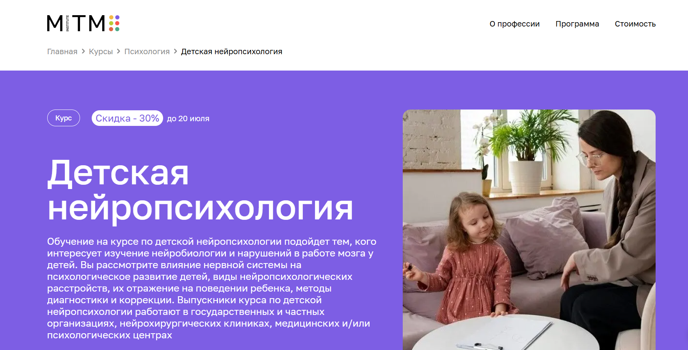- ✅ Официальный сайт: mitm.institute
- 💸 Цена: от 60 000 ₽ в месяц со скидкой 30%
- 💳 Рассрочка:от 5 000 ₽ в месяц 12 месяцев без процентов от «Тинькофф Банка»
- 📚 Формат: дистанционный формат, видеолекции, домашние задания, тесты, онлайн-встречи с экспертами
- ⏳ Продолжительность: 8 месяцев, 890 академических часов
- 📜 Документ: диплом о профессиональной переподготовке государственного образца
- 📝 Трудоустройство: выпускники работают в медицинских и психологических центрах, клиниках и образовательных организациях
- 🔷 Для кого подходит курс: студенты психологических и медицинских факультетов, родители, клинические психологи, детские психологи, специалисты без опыта, желающие сменить профессию
Особенности:
Программа разработана с учетом требований работодателей и включает как теоретическую, так и практическую подготовку. В дистанционном формате студенты могут изучать материалы в удобное время, общаться в Telegram-чате с кураторами и преподавателями. Все записи занятий доступны до конца обучения. Образовательная платформа позволяет пройти нейропсихологическую диагностику и освоить методы коррекции нарушений в детском возрасте. Программа охватывает аспекты клинической нейропсихологии и практическую подготовку с использованием современных подходов. При успешном завершении обучения выдается диплом, вносимый в реестр ФРДО РФ.
Чему учатся студенты:
- Проводить нейропсихологическую диагностику детей
- Понимать особенности развития нервной системы
- Применять методы нейропсихологической коррекции
- Работать с поведенческими, эмоциональными и когнитивными трудностями
- Анализировать нейропсихологические синдромы
- Разрабатывать планы реабилитации и коррекционной помощи
- Использовать нейропсихологические методики в практике
Преподаватели:
- Программа реализуется при участии ведущих преподавателей и супервизоров Московского института технологий и управления. Имена не указаны на официальном сайте.
Преимущества:
- Поддержка куратора 24/7 на протяжении всего курса
- Официальный диплом о профессиональной переподготовке
- Актуальные программы обучения, адаптированные под рынок
- Дистанционное обучение без отрыва от основной деятельности
- Возможность получить налоговый вычет 13%
- Общение с преподавателями и коллегами в чате
- Доступ к записям лекций до конца обучения
- Гибкий график обучения
Отзывы учеников:
Студенты чаще всего отмечают удобный дистанционный формат, гибкий график, грамотную структуру занятий и насыщенную практику. Выпускники ценят возможность совмещать обучение с работой, высокое качество контента, сопровождение кураторов и поддержку преподавателей. Отдельно подчеркивается актуальность материала и официальное подтверждение квалификации.
Перейти на официальный сайт курса7. Детская нейропсихология – Институт Профессионального Образования
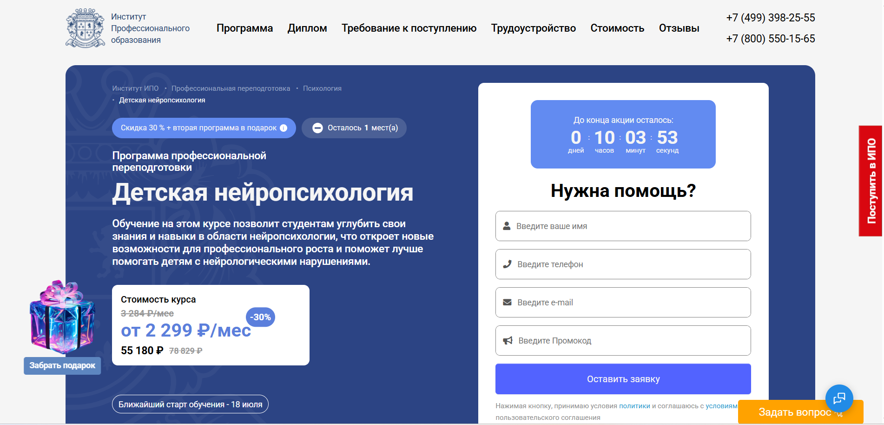
- ✅ Официальный сайт: ipo.msk.ru
- 💸 Цена: от 55 180 ₽ со скидкой 30%
- 💳 Рассрочка: от 2 299 ₽/мес на 24 месяца, возможна полная оплата со снижением стоимости
- 📚 Формат: дистанционный формат, видеолекции, тесты, задания, менторские сессии
- ⏳ Продолжительность: 8 месяцев (872 часа)
- 📜 Документ: диплом о профессиональной переподготовке, удостоверение и сертификат
- 📝 Трудоустройство: карьерный центр, консультации, помощь с резюме и отправкой работодателям
- 🔷 Для кого подходит курс: психологам, педагогам, родителям, желающим освоить нейропсихологические методики для работы с детьми
Особенности:
Программа направлена на развитие профессиональных навыков в сфере детской нейропсихологии. Обучение включает нейропсихологическую диагностику и методы коррекции нарушений в развитии детей. Дистанционный формат подходит тем, кто совмещает учебу с работой. Студенты осваивают клиническую нейропсихологию, работают с кейсами и получают навыки реальной практики. Образовательный процесс организован с учетом гибкого графика и обратной связи от преподавателей. Диплом выдается по завершении обучения и дает право вести профессиональную деятельность. Программа доступна слушателям с высшим или средним профессиональным образованием. Онлайн-платформа позволяет проходить обучение в удобное время, а поддержка кураторов помогает сохранять мотивацию на протяжении всего курса.
Чему учатся студенты:
- Проводить нейропсихологическую диагностику детей
- Анализировать особенности работы головного мозга ребенка
- Применять методы нейропсихологической коррекции
- Работать с расстройствами внимания, памяти и поведения
- Разрабатывать коррекционные программы
- Проводить нейропсихологическую реабилитацию
- Консультировать родителей по вопросам обучения и развития детей
Преподаватели:
- Бербер Наталья Николаевна — кандидат психологических наук, профессиональный психолог
- Егиазарова Мария Андреевна — тренер, психолог-консультант
- Рыбальченко Наталья Викторовна — преподаватель философии, профессиональный психолог
Преимущества:
- Выдается официальный диплом, подтверждающий квалификацию
- Доступен дистанционный формат обучения с гибким графиком
- Возможность участвовать в практике и получать обратную связь
- В курсе используются современные нейропсихологические методики
- Доступ к карьерным консультациям и помощи в трудоустройстве
- Дополнительные бонусные курсы входят в стоимость
- Участие в менторских встречах и онлайн-сообществе
- Материалы и записи остаются в бессрочном доступе
Отзывы учеников:
Слушатели отмечают высокое качество дистанционных курсов, доступность преподавателей и насыщенность программы практическими заданиями. Большинство студентов подчеркивают полезность нейропсихологического подхода и возможность применять знания сразу после окончания курса. Особенно ценится поддержка кураторов и индивидуальный подход к обучению.
Перейти на официальный сайт курса8. Практическая нейропсихология – Центральная академия профессиональной переподготовки и повышения квалификации кадров
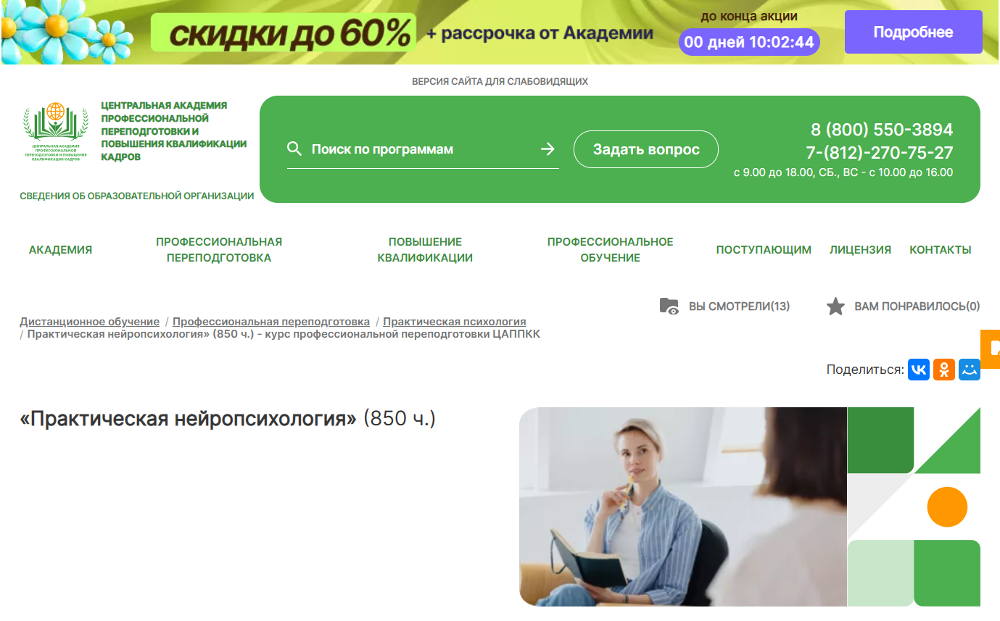
- ✅ Официальный сайт: appkk.ru
- 💸 Цена: 45 200 ₽ (вместо 55 700 ₽ по акции)
- 💳 Рассрочка: от 1 256 ₽/мес. на 36 месяцев, банки-партнеры — Тинькофф и Сбер
- 📚 Формат: дистанционный формат обучения, видеолекции, контрольные задания, тесты, доступ к вебинарам, персональный куратор
- ⏳ Продолжительность: 6 месяцев (850 академических часов)
- 📜 Документ: диплом о профессиональной переподготовке, данные вносятся в ФИС ФРДО
- 📝 Трудоустройство: поддержка HR-наставника, помощь с резюме, консультации по карьерному росту, подборка вакансий
- 🔷 Для кого подходит курс: психологам, детским и клиническим психологам, педагогам, реабилитологам, дефектологам и тем, кто хочет получить новую квалификацию
Особенности:
Курс разработан на базе современных дистанционных образовательных технологий, что позволяет освоить профессию нейропсихолога без отрыва от работы. Обучение охватывает нейропсихологические методики, включает клиническую нейропсихологию и методы коррекции нарушений высших психических функций. По завершении обучения слушатели получают бессрочный доступ к библиотеке вебинаров и учебных материалов. Программа соответствует профстандартам и ФГОС, а обучение проходит под контролем опытных преподавателей-практиков. В курс включены задания, которые помогут развить профессиональные навыки, применимые в психологической практике. Все выданные документы проходят регистрацию в федеральном реестре ФРДО. Курс рассчитан на освоение практических навыков дистанционно с возможностью обучаться в удобное время и по личному графику обучения.
Чему учатся студенты:
- Проводить нейропсихологическую диагностику и коррекцию
- Анализировать нарушения высших психических функций
- Разрабатывать программы нейропсихологической реабилитации
- Применять методы нейропсихологической коррекции в детской практике
- Использовать современные нейропсихологические подходы в клинической практике
- Работать с пациентами разного возраста, включая детей и пожилых
Преподаватели:
- Анастасия Регнер — HR-наставник, бизнес-тренер, участник международных форумов, ведущий специалист по стратегическим коммуникациям
Преимущества:
- Обучение полностью дистанционное, подходит под любые графики
- Бессрочный доступ к материалам и записям лекций
- Личный куратор и техподдержка 7 дней в неделю
- Документы заносятся в реестр ФИС ФРДО
- Гибкая система оплаты — рассрочка без переплат
- Доступ к библиотеке «БиблиоКлуб» включен бесплатно
- Поддержка после окончания обучения — помощь с трудоустройством
- Курс подходит для повышения квалификации или освоения новой профессии
Отзывы учеников:
Слушатели отмечают понятную подачу материала, грамотную организацию учебного процесса и высокую квалификацию преподавателей. Также положительно оценивают возможность совмещать дистанционное обучение с работой и качественную поддержку от HR-наставника по вопросам трудоустройства.
Перейти на официальный сайт курса9. Нейропсихологическая диагностика и коррекция в детском возрасте – Национальный центральный институт развития дополнительного образования
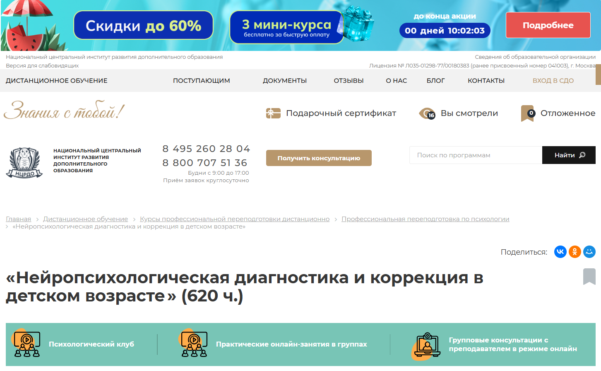
- ✅ Официальный сайт: ncrdo.ru
- 💸 Цена: 35 300 ₽ (вместо 80 200 ₽)
- 💳 Рассрочка: 981 ₽/мес на 36 месяцев
- 📚 Формат: дистанционное обучение, видеоуроки, практические задания, тесты, вебинары, доступ к методическим материалам
- ⏳ Продолжительность: 5 месяцев (620 часов)
- 📜 Документ: диплом о профессиональной переподготовке
- 📝 Трудоустройство: содействие в трудоустройстве, помощь HR-эксперта
- 🔷 Для кого подходит курс: психологам, педагогам, студентам и специалистам, желающим освоить детскую нейропсихологию
Особенности:
Курс реализуется в дистанционном формате, что позволяет совмещать обучение с основной деятельностью. Образовательная программа разработана с учётом требований профессиональных стандартов. Доступ ко всем материалам сохраняется навсегда. Преподавание ведут практикующие специалисты в области клинической нейропсихологии. По завершении курса выпускники получают диплом установленного образца, регистрация которого подтверждается в ФИС. Особое внимание уделяется освоению нейропсихологических методик диагностики и коррекции у детей. Также предусмотрены онлайн-групповые занятия и консультации преподавателей. В обучение включена работа с библиотекой вебинаров и доступ к платформе ЛитРес.
Чему учатся студенты:
- Проводить нейропсихологическую диагностику у детей
- Применять методы нейропсихологической коррекции
- Работать с нарушениями высших психических функций
- Изучать нейропсихологические основы клинической практики
- Осваивать детскую психологию и развитие когнитивных процессов
- Определять особенности детей с СДВГ, РДА, ЗПР и УО
- Проводить психологическое консультирование родителей
Преподаватели:
- Мельникова Елена Васильевна — опыт научно-практической деятельности с 2010 года
- Тышкевич Марина Юрьевна — опыт с 2006 года
- Шевченко Дария Игоревна — практикует с 2018 года
- Салихова Мария Романовна — стаж с 2007 года
Преимущества:
- Диплом вносится в Федеральный реестр сведений о документах об образовании
- Доступ к обучающим материалам — навсегда
- Возможность обучения в удобном темпе
- Профессиональная переподготовка в формате онлайн
- Консультации с преподавателями в режиме реального времени
- Доступ к библиотеке ЛитРес и БиблиоКлуб
- HR-консультация для карьерного старта
- Гибкие условия оплаты, включая беспроцентную рассрочку
Отзывы учеников:
Слушатели высоко оценивают практическую направленность курса, качество учебных материалов и работу преподавателей. Среди плюсов часто упоминаются доступность дистанционного формата, оперативная поддержка и удобная система сдачи тестов. Отмечают улучшение профессиональных навыков и возможность применить знания в клинической практике.
Перейти на официальный сайт курса10. Детская нейропсихология – ЭКОДПО
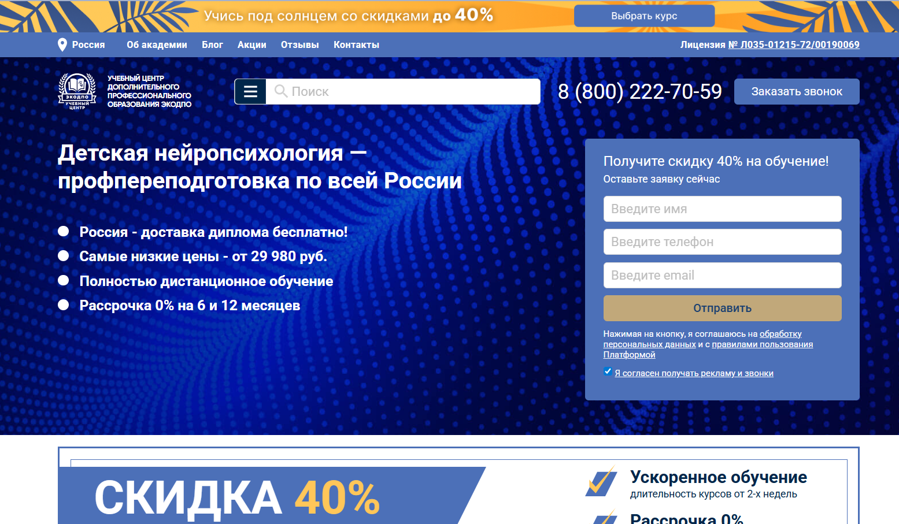- ✅ Официальный сайт: ecodpo.ru
- 💸 Цена: от 29 980 ₽ (со скидкой 40%).
- 💳 Рассрочка: от 2 498 ₽/мес, 0% на 6 и 12 месяцев — от 5 000 ₽/мес.
- 📚 Формат: дистанционные курсы, личный кабинет, видеоуроки, тесты, задания, вебинары, доступ 24/7.
- ⏳ Продолжительность: от 1,5 до 3 месяцев, 250–555 академических часов.
- 📜 Документ: диплом о профессиональной переподготовке установленного образца.
- 📝 Трудоустройство: возможна работа в реабилитационных и психологических центрах, детских учреждениях.
- 🔷 Для кого подходит курс: для лиц с профильным средним или высшим профессиональным образованием в сфере психологии, реабилитации или смежных специальностях.
Особенности:
Курс позволяет изучить клиническую нейропсихологию и методы коррекции нарушений психических функций у детей в удобной дистанционной форме. Обучение проходит в собственном темпе без ожидания группы и вступительных экзаменов. После успешного завершения курса слушатели получают диплом, позволяющий работать детским нейропсихологом. Материалы включают как теоретические основы, так и практические навыки, необходимые в психологической практике. При необходимости предоставляется индивидуальный учебный план. Образовательный процесс реализуется через современные дистанционные технологии. Отправка документов осуществляется по всей России бесплатно.
Чему учатся студенты:
- Проводить нейропсихологическую диагностику у детей
- Использовать методы нейропсихологической коррекции
- Изучать нейропсихологическую реабилитацию
- Работать с нарушениями высших психических функций
- Применять клинические и компьютерные методики
- Понимать физиологию ЦНС и детскую психологию
- Владеть практическими навыками консультирования
Преподаватели:
- ФИО преподавателей на официальном сайте не указаны. Уточнение возможно по телефону: 8 (800) 222-70-59.
Преимущества:
- Полностью дистанционный формат с круглосуточным доступом
- Возможность начать обучение в день подачи заявки
- Индивидуальный подход к составлению программы
- Документы высылаются бесплатно по всей России
- Не требуется вступительных экзаменов
- Гибкие условия рассрочки без переплат
- Программа соответствует ФЗ №273 об образовании
- Персональный куратор и методическая поддержка
Отзывы учеников:
Слушатели курса отмечают простоту подачи материала, удобный дистанционный формат и оперативную помощь кураторов. Особенно ценят возможность изучать программу по гибкому графику и получать документы без задержек. Многие хвалят индивидуальный подход и актуальность знаний для практической работы в сфере детской психологии.
Перейти на официальный сайт курса11. Детская нейропсихология – Учебный центр АПОК
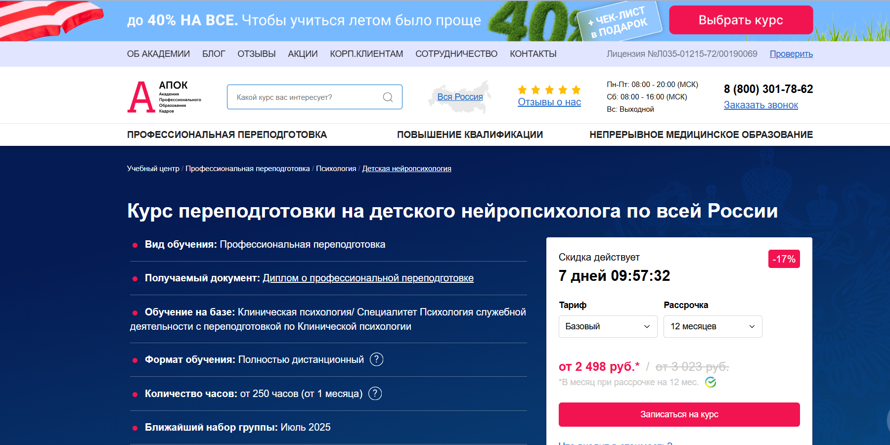
- ✅ Официальный сайт: apokdpo.ru
- 💸 Цена: от 29 980 ₽ (со скидкой 17% ).
- 💳 Рассрочка: на 6 или 12 месяцев, от 2 498 ₽ в месяц, без процентов.
- 📚 Формат: дистанционное обучение, видеолекции, кейсы, методические материалы, тесты.
- ⏳ Продолжительность: от 250 часов (от 1 месяца).
- 📜 Документ: диплом о профессиональной переподготовке, регистрация в ФИС ФРДО.
- 📝 Трудоустройство: курс способствует карьерному росту и повышению квалификации.
- 🔷 Для кого подходит курс: клиническим психологам, специалистам с образованием по психологии, желающим пройти профессиональную переподготовку по детской нейропсихологии.
Особенности:
Обучение полностью дистанционное и подходит для слушателей из любого региона России. Программа ориентирована на развитие профессиональных навыков в нейропсихологической диагностике и коррекции у детей. Учебный процесс выстроен по принципам клинической нейропсихологии и включает современные методики, направленные на развитие практических навыков и освоение клинического подхода. Все документы проходят официальную регистрацию, а диплом соответствует требованиям законодательства. Предусмотрена бесплатная доставка итоговых документов и гибкий график обучения, а также возможность ускоренного прохождения программы. При необходимости можно выбрать индивидуальный подход, а персональные пожелания к содержанию курса доступны на продвинутом и премиум тарифах.
Чему учатся студенты:
- Проводить нейропсихологическую диагностику и коррекцию нарушений
- Изучать нейропсихологические синдромы и методы диагностики
- Применять методы клинической нейропсихологии у детей
- Работать с психическими функциями: внимание, память, речь, моторика
- Осваивать современные подходы и методы коррекции поведения у детей
- Применять нейропсихологические методики в практике детского психолога
Преподаватели:
- Сайт не содержит конкретных ФИО преподавателей. Все преподаватели — эксперты с профильным образованием и практическим опытом в сфере детской нейропсихологии.
Преимущества:
- Дистанционный формат позволяет обучаться в удобное время
- Все документы доставляются бесплатно по России
- Выдается диплом установленного образца, действующий по всей стране
- Возможность выбрать индивидуальную программу или ускоренный график
- Гарантия возврата средств, если курс не устроит
- Профессиональная переподготовка с официальной лицензией
- Возможность получить налоговый вычет 13%
- Участие в акциях — до 40% скидка при семейном обучении
Отзывы учеников:
Студенты положительно отзываются о дистанционном формате и доступной подаче материала. Многие отмечают гибкость графика, высокое качество учебных материалов и компетентность преподавателей. Также подчеркивают, что курс помогает освоить профессию нейропсихолога и успешно применять полученные знания на практике.
Перейти на официальный сайт курса12. Онлайн-курсы детской нейропсихологии и психокоррекции — Международная школа профессий
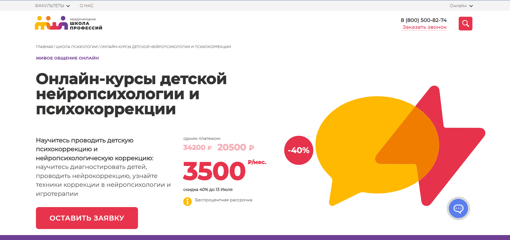- ✅ Официальный сайт: online.videoforme.ru
- 💸 Цена: 20 500 ₽ (скидка 40% )
- 💳 Рассрочка: 3 500 ₽ в месяц без переплат
- 📚 Формат: дистанционное обучение, видеолекции, интерактивные задания, вебинары, записи занятий, поддержка наставников
- ⏳ Продолжительность: 8 недель (15 практических занятий по 1,5 часа)
- 📜 Документ: сертификат о прохождении курса
- 📝 Трудоустройство: возможность начать практику уже в процессе обучения
- 🔷 Для кого подходит курс: педагогам, психологам, родителям, специалистам, желающим освоить нейропсихологический подход в детском возрасте
Особенности:
Курс предлагает структурированное дистанционное обучение с акцентом на практические навыки, включая методы нейропсихологической диагностики и коррекции. Образовательная программа охватывает ключевые направления нейропсихологии детского возраста и помогает слушателям получить профессиональную переподготовку. Обучение проходит онлайн, что позволяет адаптировать график под любые потребности. Участники получают доступ к учебным материалам на три месяца и могут совмещать учебу с работой или другими курсами. После окончания курса выпускники могут оказывать нейропсихологическую помощь детям с нарушениями психического развития.
Чему учатся студенты:
- Проводить нейропсихологическую диагностику детей
- Применять методы нейропсихологической коррекции
- Использовать техники детской игротерапии
- Анализировать клинические проявления детских неврозов
- Разрабатывать индивидуальные программы психокоррекции
- Внедрять методы диагностики и коррекции нарушений психических функций
Преподаватели:
- Надежда Зарипова — психолог, преподаватель Международной школы профессий, специалист по семейному, детскому и групповому консультированию, автор тренингов по адаптации детей
Преимущества:
- Дистанционный формат позволяет проходить обучение в удобное время
- Обучение с поддержкой практикующих специалистов
- Упор на освоение профессиональных навыков и практическую работу
- Поддержка наставников на всех этапах курса
- Официальный документ по окончании обучения
- Возможность работать частным нейропсихологом во время прохождения курса
- Курс доступен для оплаты материнским капиталом и по социальным программам
- Высокие оценки студентов и актуальность тематики
Отзывы учеников:
Студенты чаще всего отмечают понятную подачу материала, практическую направленность занятий и высокий профессионализм преподавателей. Также хвалят гибкий график и возможность совмещать обучение с работой. Отдельно выделяют доступность материалов и оперативную поддержку от наставников.
Перейти на официальный сайт курса13. Нейропсихология – Московский институт психологии
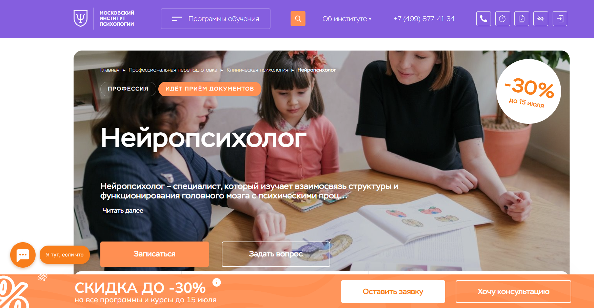
- ✅ Официальный сайт: mip.institute
- 💸 Цена: 148 564 ₽ (со скидкой 30%, без скидки — 212 000 ₽)
- 💳 Рассрочка: 12 400 ₽ в месяц, беспроцентная рассрочка на 12 месяцев
- 📚 Формат: дистанционный формат, видеолекции, онлайн-тесты, домашние задания, практика на кейсах, супервизии
- ⏳ Продолжительность: 11 месяцев, 1600 часов
- 📜 Документ: диплом о профессиональной переподготовке с международным приложением
- 📝 Трудоустройство: возможность вести психологическую практику, подтверждение квалификации
- 🔷 Для кого подходит курс: начинающим, специалистам без диплома, желающим получить образование по профессии клинического психолога
Особенности:
Программа сочетает теоретическую базу и практическую подготовку по клинической нейропсихологии с упором на дистанционное обучение. Студенты осваивают методы нейропсихологической диагностики и коррекции, работают с реальными кейсами и получают актуальные знания о нарушениях высших психических функций. Курс разработан для тех, кто хочет работать как детский или взрослый нейропсихолог. Образование соответствует профессиональным стандартам и лицензировано. Обучение проходит онлайн, подходит к любому графику, без отрыва от основной деятельности.
Чему учатся студенты:
- Проводить нейропсихологическую диагностику в детском и взрослом возрасте
- Разрабатывать индивидуальные программы коррекции нарушений
- Применять методы нейропсихологической реабилитации
- Использовать комплекс современных нейропсихологических методик
- Проводить анализ эмоционально-личностных нарушений при поражениях мозга
Преподаватели:
- Волченкова Анастасия Александровна — кандидат психологических наук, доцент, клинический психолог, сертифицированный детский гештальт-терапевт
- Стибунов Алексей Васильевич — клинический психолог, психолог-консультант, первый проректор Московского института психологии
Преимущества:
- Дистанционное обучение подходит под любой график
- Диплом выдается официально, с международным приложением
- Обучение включает 26 модулей с теорией и практикой
- Поддержка куратора и преподавателей на всех этапах
- Разбор реальных случаев и демонстрационные сессии
- Участие в профессиональном сообществе выпускников
- Платформа с постоянным доступом к материалам
- Возможность стать членом ОППЛ
Отзывы учеников:
Слушатели курса отмечают доступный и практикоориентированный формат, квалифицированных преподавателей, интересные задания и возможность работать в удобном ритме. Высоко ценят свободу в обучении, поддержку кураторов и качественную обратную связь.
Перейти на официальный сайт курса14. Нейропсихология – Московский институт технологий и управления
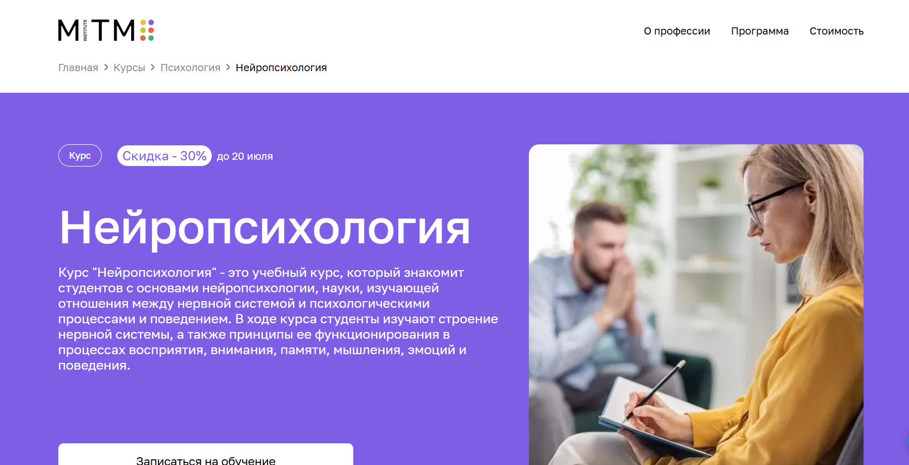
- ✅ Официальный сайт: mitm.institute
- 💸 Цена обучения: от 60 000 ₽ со скидкой 30%
- 💳 Рассрочка: от 5 000 ₽ в месяц 12 месяцев без переплат, доступна через Тинькофф Банк.
- 📚 Формат: дистанционное обучение, включает видеолекции, практикумы, домашние задания, тесты, супервизии и общение с менторами.
- ⏳ Продолжительность: 8 месяцев (890 академических часов).
- 📜 Документ: диплом о профессиональной переподготовке государственного образца.
- 📝 Трудоустройство: программа ориентирована на соответствие требованиям работодателей, возможен налоговый вычет 13%.
- 🔷 Для кого подходит курс: для будущих нейропсихологов, клинических и детских психологов, медицинских специалистов, педагогов и студентов, интересующихся клинической нейропсихологией.
Особенности:
Образовательная программа разработана для дистанционного формата и полностью адаптирована под график слушателей. В процессе обучения акцент делается на клиническую нейропсихологию, методы диагностики и коррекцию когнитивных нарушений. Поддержка преподавателей и кураторов позволяет проходить обучение в удобном ритме и получать обратную связь по всем темам. Студенты осваивают нейропсихологические методики и применяют их в учебной практике, получая необходимые профессиональные навыки. После окончания курса слушатели получают диплом и могут работать в области детской нейропсихологии, проводить нейропсихологическую коррекцию и участвовать в реабилитации пациентов.
Чему учатся студенты:
- Проводить нейропсихологическую диагностику и использовать методы коррекции
- Изучать нарушения высших психических функций
- Работать с когнитивными расстройствами и поведением пациентов
- Применять методы нейропсихологической реабилитации
- Анализировать и оценивать функции мозга
- Работать с детьми с психическими и поведенческими трудностями
Преподаватели:
- Программа реализуется преподавателями с опытом работы в клинической практике и нейропсихологическом подходе (ФИО на сайте не указаны).
Преимущества:
- Дистанционное обучение с доступом к материалам 24/7
- Супровождение куратором на всех этапах обучения
- Возможность освоить профессию нейропсихолога с нуля
- Наличие практических заданий и живых встреч с экспертами
- Выдается диплом, соответствующий профессиональным стандартам
- Поддержка при составлении индивидуального графика обучения
- Общение с преподавателями и менторами в Telegram-чате
- Курс адаптирован под детскую и клиническую нейропсихологию
Отзывы учеников:
Слушатели курса часто отмечают удобство дистанционного формата, насыщенность программы, высокий уровень преподавания и возможность применить знания на практике. Положительно оцениваются поддержка кураторов, гибкий график и актуальность учебных материалов.
Перейти на официальный сайт курса15. Нейропсихология – Московский Институт Профессионального Образования
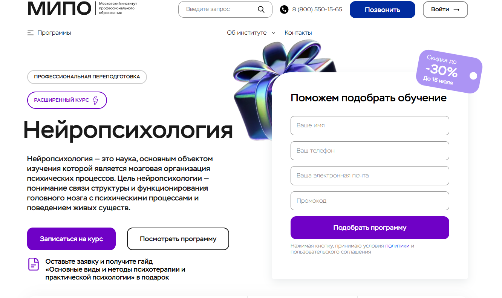
- ✅ Официальный сайт: mipo.msk.ru
- 💸 Цена: от 48 620 ₽ до 78 666 ₽ с возможностью получить скидку до 30% .
- 💳 Рассрочка: доступна на 24 месяца от 2 027 ₽/мес.
- 📚 Формат: дистанционные курсы — онлайн-лекции, тестирование, домашние задания, вебинары, видеоматериалы, сопровождение куратором.
- ⏳ Продолжительность: до 10 месяцев, 872 академических часа.
- 📜 Документ: выдается диплом о профессиональной переподготовке, внесённый в ФИС-ФРДО.
- 📝 Трудоустройство: Центр развития карьеры и сопровождение после завершения курса.
- 🔷 Для кого подходит курс: для начинающих специалистов, практикующих клинических психологов, педагогов и тех, кто хочет освоить детскую нейропсихологию для личных целей.
Особенности:
Программа подходит тем, кто хочет освоить нейропсихологическую диагностику и коррекцию с нуля или подтвердить уже имеющиеся компетенции. Обучение проходит в дистанционном формате, что позволяет совмещать освоение профессии психолога с текущей занятостью. Студенты работают с современными нейропсихологическими методиками, изучают основы клинической нейропсихологии, проходят практические задания. Доступ к образовательной платформе открыт на всём протяжении курса, а видеолекции можно пересматривать в любое удобное время. Каждый студент закреплён за персональным ментором и куратором, который сопровождает на всех этапах обучения. После успешного завершения курса слушатели получают диплом, подтверждающий квалификацию.
Чему учатся студенты:
- Проводить нейропсихологическую диагностику и коррекцию
- Работать с нарушениями психических функций и когнитивных расстройств
- Оказывать помощь детям и взрослым с неврологическими нарушениями
- Использовать методы нейропсихологической реабилитации
- Применять знания клинической нейропсихологии в практике
- Осуществлять психологическое консультирование и поддержку
Преподаватели:
- Урывчикова Татьяна Геннадьевна — клинический психолог, член Ассоциации КПТ
- Перемолотова Ирина Александровна — арт-терапевт, член ICI
- Цяпало Анна — сертифицированный сексотерапевт, специалист по коучингу
- Миркина Елена — клинический психолог, тренер по soft-skills
- Сальникова Дарья — дефектолог, научный сотрудник РАО
- Балобанов Василий — семейный психолог, автор обучающей методики
Преимущества:
- Диплом государственного образца с регистрацией в ФИС-ФРДО
- Обучение доступно в любом регионе благодаря дистанционному формату
- Включены практические модули по детской и клинической нейропсихологии
- Поддержка менторов, методистов и службы заботы на всех этапах
- Гибкий график обучения с доступом к записям вебинаров
- Подходит для карьерного роста или смены профессии
- Курсы включают материалы по современным методам коррекции нарушений
- Получение налогового вычета 13%
Отзывы учеников:
Слушатели отмечают высокий уровень профессионализма преподавателей и структурированность учебных материалов. Плюсами называют персональное сопровождение, понятную подачу сложных тем, насыщенность практическими заданиями и возможность совмещать обучение с работой. Также выделяют оперативную поддержку и актуальные знания, которые можно применять сразу после окончания обучения.
Перейти на официальный сайт курса16. Нейропсихология: диагностика, коррекция, реабилитация – Институт Профессионального Образования
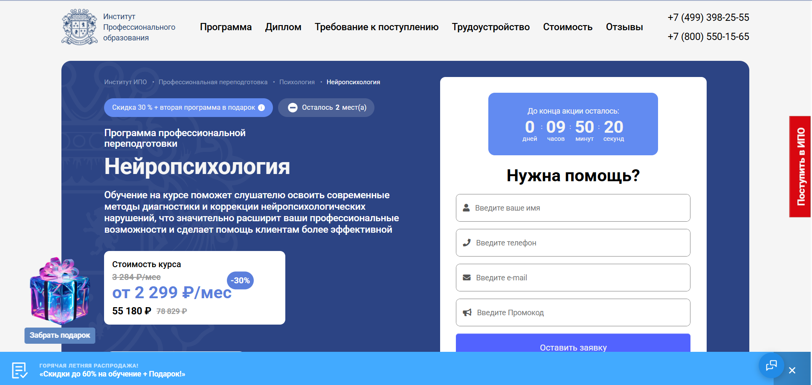
- ✅ Официальный сайт: ipo.msk.ru
- 💸 Цена: по акции до 55 180 ₽ вместо 78 829 ₽
- 💳 Рассрочка: от 2 299 ₽/мес до 24 месяцев без переплат
- 📚 Формат: дистанционный формат — видеолекции, домашние задания, онлайн-встречи, тесты, практика, менторство
- ⏳ Продолжительность: 10 месяцев (872 академических часа)
- 📜 Документ: диплом о профессиональной переподготовке, удостоверение, сертификат
- 📝 Трудоустройство: помощь в составлении резюме, подготовке к собеседованиям, доступ к вакансиям
- 🔷 Для кого подходит курс: начинающим и практикующим специалистам в сфере психологии и педагогики, а также тем, кто хочет освоить профессию детского или клинического нейропсихолога
Особенности:
Программа построена на базе дистанционного обучения с гибким графиком, что позволяет проходить обучение в удобное время. Студенты изучают методы нейропсихологической диагностики, коррекции и реабилитации. Обучение проходит полностью онлайн, что особенно удобно для тех, кто совмещает учебу с работой. Поддержка от преподавателей и менторов доступна на всех этапах курса. Выдается диплом, подтверждающий квалификацию, дающий право консультировать клиентов на территории РФ. В программу включены как теоретические блоки, так и практические задания с обратной связью. Особое внимание уделяется нейропсихологии детского возраста и навыкам клинического психолога. Образование соответствует государственным стандартам и позволяет начать карьеру в сфере нейропсихологии.
Чему учатся студенты:
- Проводить нейропсихологическую диагностику и интерпретировать её результаты
- Оценивать когнитивные функции — внимание, память, мышление, речь
- Применять методы нейропсихологической коррекции и реабилитации
- Разрабатывать индивидуальные программы сопровождения
- Работать с детьми и взрослыми с нарушениями высших психических функций
- Понимать нейропсихологические основы поведения и психических процессов
Преподаватели:
- Ольга Петровна Апарина — кандидат медицинских наук, нутрициолог, автор научных статей
- Олеся Александровна Круглушина — психолог, психотерапевт, преподаватель, семейный консультант
- Владимир Иванович Алипов — преподаватель МГУ, квалифицированный врач
Преимущества:
- Полностью дистанционный формат обучения
- Выдается диплом установленного образца с правом на практику
- Поддержка кураторов и менторов в течение всего обучения
- Онлайн-встречи с практикующими специалистами
- Программа включает практические кейсы и работу в парах
- Фокус на нейропсихологии детского возраста и клинической практике
- Бессрочный доступ к учебным материалам и записям занятий
- Дополнительные курсы и сертификаты в подарок
Отзывы учеников:
Слушатели отмечают высокий уровень преподавания и доступность изложения сложных тем. Особенно выделяют практическую направленность курса, удобную образовательную платформу и актуальность получаемых знаний. Многие положительно отзываются о нейропсихологических методиках, которые сразу можно применять в работе с детьми и взрослыми.
Перейти на официальный сайт курса17. Психолого-педагогическое сопровождение образовательного процесса. Нейропсихологическая диагностика и коррекция в детском возрасте – Национальная академия дополнительного профессионального образования
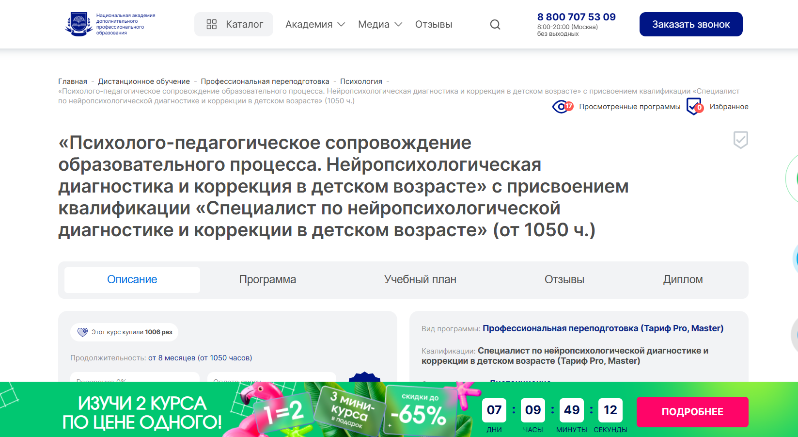
- ✅ Официальный сайт: nadpo.ru
- 💸 Цена: от 50 200 ₽ (скидка — 23%)
- 💳 Рассрочка: 0% на 24–36 месяцев, от 4 183 ₽ в месяц
- 📚 Формат: дистанционный формат, видеолекции, домашние задания, тестирование, доступ к библиотекам ЛитРес и БиблиоКлуб
- ⏳ Продолжительность: от 8 месяцев (от 1050 академических часов)
- 📜 Документ: диплом о профессиональной переподготовке (тарифы Pro и Master)
- 📝 Трудоустройство: помощь с резюме, консультации с HR-наставником, предложения от партнёров ещё в процессе обучения
- 🔷 Для кого подходит курс: для желающих получить профессию детского нейропсихолога, клинического психолога, педагогов, дефектологов, логопедов и других специалистов сферы образования
Особенности:
Программа позволяет пройти профессиональную переподготовку по клинической нейропсихологии в дистанционном формате. Она разработана в соответствии с ФГОС, что приравнивает её к университетскому уровню образования. Сразу после зачисления слушателям предоставляется доступ к образовательной платформе, где размещены учебные материалы, практические задания и тесты. Более 30% курса занимает отработка практических навыков. Выпускники курса могут проводить нейропсихологическую диагностику и коррекцию у детей, в том числе с РАС, СДВГ и нарушениями психического развития. Поддержка предоставляется на всех этапах обучения. По окончании курса выдаётся диплом установленного образца, соответствующий профессиональным стандартам.
Чему учатся студенты:
- Проводить нейропсихологическую диагностику у детей
- Применять методы нейропсихологической коррекции
- Разрабатывать индивидуальные программы обучения и реабилитации
- Использовать современные нейропсихологические методики
- Работать с детьми с психическими и когнитивными нарушениями
- Применять знания в рамках образовательного процесса
Преподаватели:
- Информация о преподавателях на сайте не указана.
Преимущества:
- Официальный диплом по окончании курса
- Возможность обучения по гибкому графику
- Более 1000 студентов уже прошли обучение
- Доступ к дополнительным материалам и библиотекам
- Низкий порог входа — достаточно высшего образования
- Поддержка карьерного роста и трудоустройства
- Возможность работать в государственных и частных учреждениях
- Освоение востребованных навыков нейропсихологической помощи
Отзывы учеников:
По отзывам в интернете, студенты особенно ценят практическую направленность программы и доступный дистанционный формат. Отмечают простоту подачи материала, удобную платформу и своевременную обратную связь от кураторов. Также выделяют возможность совмещать обучение с работой и семейными обязанностями.
Перейти на официальный сайт курса18. Нейропсихологическая диагностика и коррекция в детском возрасте – Национальная академия дополнительного профессионального образования
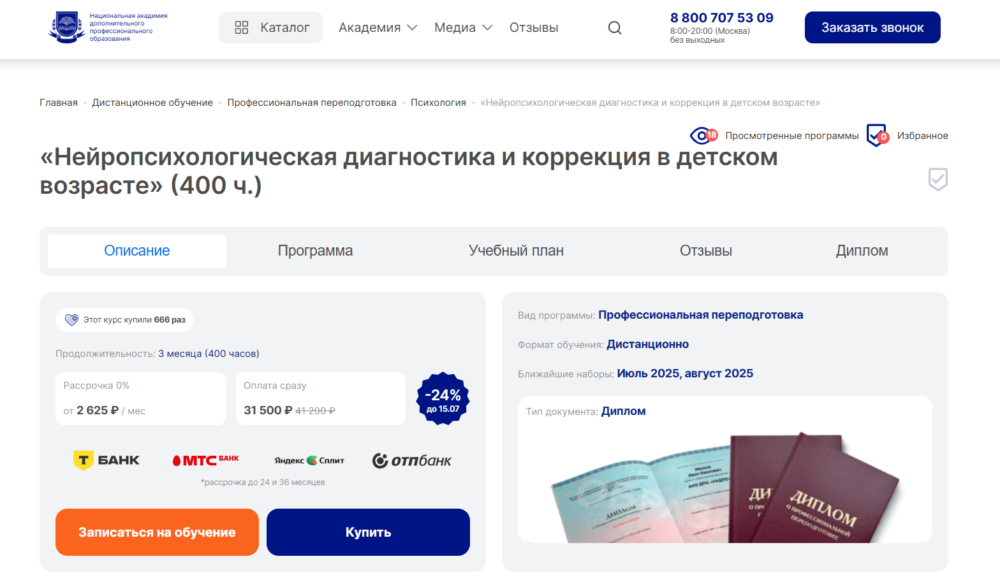
- ✅ Официальный сайт: nadpo.ru
- 💸 Цена: 31 500 ₽ (со скидкой , старая цена — 41 200 ₽)
- 💳 Рассрочка: от 2 625 ₽ в месяц, 0%, срок до 36 месяцев
- 📚 Формат: дистанционный формат, включает лекции, домашние задания, практические занятия, супервизии, доступ к библиотекам ЛитРес и БиблиоКлуб
- ⏳ Продолжительность: 3 месяца (400 академических часов)
- 📜 Документ: выдается диплом о профессиональной переподготовке, соответствующий ФГОС
- 📝 Трудоустройство: поддержка с HR-наставником и предложения от партнёров уже во время прохождения курса
- 🔷 Для кого подходит курс: для психологов, педагогов, специалистов в сфере развития детей, а также всех, кто хочет получить новую квалификацию в сфере нейропсихологии детского возраста
Особенности:
Программа обучения разработана с акцентом на нейропсихологическую диагностику и коррекцию, основываясь на современных подходах клинической нейропсихологии. В процессе дистанционного обучения слушатели получают доступ к интерактивным практикумам, воркшопам, супервизиям и обратной связи от преподавателей. Акцент сделан на формирование практических навыков работы с детьми, имеющими когнитивные и эмоциональные нарушения. Курс помогает освоить методы диагностики и коррекции нарушений психических функций, актуальные в работе детского нейропсихолога. После успешного прохождения образовательной программы выдается официальный диплом, дающий право на ведение профессиональной деятельности. Учебный план учитывает потребности рынка и позволяет освоить востребованные навыки за короткий срок. Поддержка после окончания курса делает старт карьеры проще.
Чему учатся студенты:
- Применять методы нейропсихологической диагностики у детей
- Проводить нейропсихологическую коррекцию при СДВГ, РАС и когнитивных нарушениях
- Составлять индивидуальные программы реабилитации
- Использовать современные нейропсихологические методики в образовательной и клинической практике
- Работать с эмоциональными и речевыми нарушениями у детей
- Анализировать результаты диагностики и разрабатывать маршруты помощи
Преподаватели:
- Тарасов Сергей Васильевич — кандидат психологических наук, доцент, практикующий специалист с 2000 года
- Егорова Наталья Николаевна — кандидат психологических наук, 22 года профессионального опыта
- Челнокова Ирина Александровна — кандидат психологических наук, член Российской ассоциации КПТ
- Санжапова Эльмира Викторовна — кандидат педагогических наук, доцент, с опытом с 2005 года
Преимущества:
- Обучение в дистанционном формате с гибким графиком
- Выдается диплом установленного образца, действующий по всей РФ
- Более 30% курса — практические занятия и работа с реальными кейсами
- Доступ к электронным библиотекам и образовательным материалам
- Поддержка карьерного роста и возможность трудоустройства
- Современные образовательные технологии и актуальные методики
- Участие в супервизиях и практике в ролях клиента, терапевта и наблюдателя
- Подходит как для специалистов, так и для родителей, желающих помочь своим детям
Отзывы учеников:
В отзывах о НАДПО студенты часто отмечают доступность дистанционного формата и удобную организацию учебного процесса. Подчеркивают, что программа даёт чёткие и применимые знания, обилие практики и квалифицированную обратную связь. Отмечают компетентность преподавателей и поддержку при выходе на рынок труда.
Перейти на официальный сайт курса19. Нейропсихология детского возраста – Национальная академия дополнительного профессионального образования
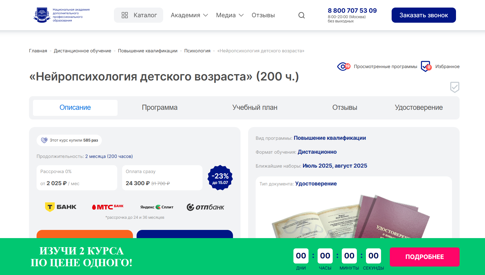- ✅ Официальный сайт: nadpo.ru
- 💸 Цена обучения: 24 300 ₽ (скидка 23% , старая цена — 31 700 ₽)
- 💳 Рассрочка: 0%, от 2 025 ₽ в месяц до 36 месяцев
- 📚 Формат: дистанционный формат — видеолекции, тесты, домашние задания, доступ к библиотекам ЛитРес и Библиоклуб
- ⏳ Продолжительность: 2 месяца (200 академических часов)
- 📜 Документ: удостоверение о повышении квалификации, вносится в реестр ФИС ФРДО
- 📝 Трудоустройство: возможность работы в образовательных, реабилитационных и психологических центрах, а также в онлайн-формате
- 🔷 Для кого подходит курс: для детского психолога, клинического психолога, педагогов, родителей и всех, кто работает с детьми с особенностями развития
Особенности:
Программа разработана для дистанционного обучения с учётом актуальных стандартов в сфере клинической нейропсихологии. Она охватывает нейропсихологическую диагностику, коррекцию и методы нейропсихологической реабилитации детей. Обучение проходит в гибком графике, что позволяет совмещать его с основной деятельностью. В курсе используются современные образовательные технологии и практические кейсы. По завершении курса слушателям выдается документ, соответствующий требованиям дополнительного профессионального образования. Форматы обучения предполагают не только теоретические знания, но и развитие практических навыков с возможностью последующей практики. Курс включает нейропсихологические методики, которые легко адаптируются под индивидуальные программы коррекции. Слушатели получают доступ к дополнительным материалам и сервисам для саморазвития.
Чему учатся студенты:
- Проводить нейропсихологическую диагностику и составлять индивидуальные программы коррекции
- Использовать методы клинической нейропсихологии в работе с детьми
- Оказывать нейропсихологическую помощь при нарушениях высших психических функций
- Разрабатывать и применять методы нейропсихологической коррекции и реабилитации
- Работать с сенсорными и когнитивными нарушениями
Преподаватели:
- Тарасов Сергей Васильевич — кандидат психологических наук, доцент, с опытом работы с 2000 года
- Егорова Наталья Николаевна — кандидат психологических наук, более 22 лет научной и практической деятельности
- Челнокова Ирина Александровна — кандидат психологических наук, член Российской ассоциации КПТ, практикует с 2008 года
- Санжапова Эльмира Викторовна — кандидат педагогических наук, доцент, стаж работы с 2005 года
Преимущества:
- Обучение проходит полностью дистанционно в удобное время
- Удостоверение о квалификации официально регистрируется в ФИС ФРДО
- Предоставляется бесплатный доступ к библиотекам и учебным материалам
- Программа соответствует профессиональным стандартам и клинической практике
- Можно совмещать обучение с работой и личной жизнью
- Преподаватели — признанные специалисты в нейропсихологическом подходе
- Подходит как для начинающих, так и для практикующих специалистов
- Нулевая процентная ставка по рассрочке до 36 месяцев
Отзывы учеников:
Студенты особенно ценят чёткую структуру курса, актуальность информации и доступность преподавателей. Часто отмечают удобный дистанционный формат, возможность применить полученные знания на практике и высокую квалификацию преподавательского состава.
Перейти на официальный сайт курса20. Специальное (дефектологическое) образование с детской нейропсихологией — АНО «НИИДПО»
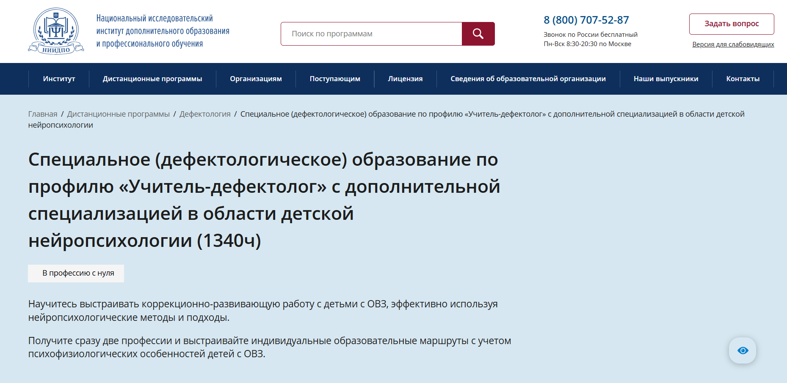
- ✅ Официальный сайт: niidpo.ru
- 💸 Цена: 68 200 ₽ (при оплате, выгода 7 500 ₽).
- 💳 Рассрочка: 0% на 12 месяцев от 5 685 ₽/мес, без первоначального взноса.
- 📚 Формат: дистанционный формат, включает видеолекции, практические задания, кейсы, тестирование, онлайн-вебинары с сертификатами.
- ⏳ Продолжительность: 33 недели (ускоренно — 26 недель).
- 📜 Документ: диплом о профессиональной переподготовке с двумя квалификациями: учитель-дефектолог и нейропсихолог.
- 📝 Трудоустройство: возможна работа в образовательных, медицинских и социальных учреждениях, а также в частной практике.
- 🔷 Для кого подходит курс: для логопедов, детских психологов, социальных педагогов, тьюторов, медработников и родителей детей с ОВЗ.
Особенности:
Программа ориентирована на тех, кто хочет освоить профессию нейропсихолога и получить квалификацию клинического дефектолога без отрыва от работы. Курс проводится полностью онлайн, включая итоговую аттестацию. Студенты осваивают современные нейропсихологические методики диагностики и коррекции, практикуются в составлении индивидуальных программ развития для детей с нарушениями психических процессов. Преподаватели — действующие специалисты с клинической практикой, что гарантирует получение актуальных знаний и практических навыков. В процессе обучения предоставляется бессрочный доступ к материалам, участие в вебинарах, обратная связь и поддержка экспертов. Студенты имеют доступ к Центру развития карьеры и архиву вебинаров, а также закрытому Telegram-каналу.
Чему учатся студенты:
- Проводить нейропсихологическую диагностику детей с ОВЗ
- Использовать методы нейропсихологической коррекции
- Разрабатывать индивидуальные образовательные маршруты
- Применять клиническую нейропсихологию в реабилитации
- Контролировать и корректировать восстановление высших психических функций
Преподаватели:
- Самарцева Евгения Георгиевна — кандидат педагогических наук, доцент
- Воронцова Екатерина Евгеньевна — преподаватель медицинских дисциплин
- Даильнева Александра Александровна — специальный психолог, учитель надомного обучения
- Широких Лидия Сергеевна — педагог-психолог, специалист по детям с нарушениями слуха, стаж работы с ОВЗ — 20 лет
Преимущества:
- Профессия нейропсихолога и дефектолога с нуля
- Удобный дистанционный формат обучения с возможностью ускоренного прохождения
- Поддержка экспертов в области клинической психологии и коррекции нарушений
- Бессрочный доступ к материалам после завершения курса
- Участие в онлайн-вебинарах с сертификатами
- Постоянный доступ к карьерной поддержке и профессиональному сообществу
- Сертификат компетенций для аттестации
- Гибкие формы оплаты, включая рассрочку без переплаты
Отзывы учеников:
Студенты часто отмечают высокий уровень преподавателей, практическую направленность программы, а также удобный дистанционный формат. Особенно ценится возможность сразу применять полученные знания в работе с детьми и наличие обратной связи от преподавателей.
Перейти на официальный сайт курса21. Нейропсихология детского возраста (144 часа) – АНО «НИИДПО»
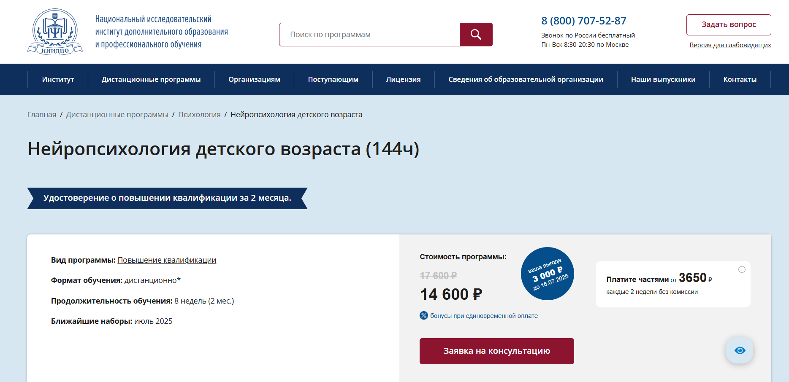- ✅ Официальный сайт: niidpo.ru
- 💸 Цена: 14 600 ₽ (скидка 3 000 ₽ )
- 💳 Рассрочка: от 3 650 ₽ каждые 2 недели без комиссии
- 📚 Формат: дистанционный формат: видеолекции, практические задания, тесты, форумы, доступ к архиву вебинаров и методическим материалам
- ⏳ Продолжительность: 8 недель (2 месяца)
- 📜 Документ: удостоверение о повышении квалификации
- 📝 Трудоустройство: возможность работать в учреждениях образования, реабилитации и частной практике (при наличии базового психологического образования)
- 🔷 Для кого подходит курс: психологам, педагогам, дефектологам, медицинским и клиническим психологам с профильным образованием
Особенности:
Курс разработан специально для специалистов, работающих с детьми, с акцентом на нейропсихологическую диагностику и методы коррекции нарушений. Все обучение проходит полностью дистанционно, включая итоговые тесты. Образовательная платформа института доступна через мобильное приложение, что позволяет проходить занятия в удобных форматах. Программа предлагает бессрочный доступ к учебным материалам после завершения обучения. Студенты изучают нейропсихологические методики и учатся применять полученные знания на практике под контролем экспертов. Доступ к более чем 13 000 вебинаров, ежемесячные лекции и супервизии делают обучение живым и прикладным. Возможность консультирования родителей и проведения нейропсихологической коррекции после окончания курса открывает новые перспективы в профессии психолога.
Чему учатся студенты:
- Понимать организацию высших психических функций у детей
- Проводить нейропсихологическую диагностику и анализировать результаты
- Определять симптомы нарушений в сенсорной и когнитивной сферах
- Использовать методы нейропсихологической коррекции
- Консультировать родителей по результатам обследования
- Работать с междисциплинарными подходами
Преподаватели:
- Иващенко Лариса Борисовна — кандидат наук, эксперт в нейропсихологии
Преимущества:
- Бессрочный доступ к материалам после окончания курса
- Возможность участия в онлайн-супервизиях с экспертами
- Платформа доступна через мобильное приложение
- Архив из 13 000+ вебинаров и сертификаты за участие
- Практические задания с проверкой от преподавателей
- Подходит под профессиональные стандарты и требования ФГОС
- Доступно без отрыва от работы, обучение проходит дистанционно
- Разработано для практикующих специалистов в сфере детской психологии
Отзывы учеников:
Студенты часто отмечают удобный дистанционный формат и насыщенное содержание курса. Плюсами называют понятные лекции, насыщенную программу с акцентом на практику и возможность применения методик сразу после завершения обучения. Отдельно хвалят поддержку преподавателей и ценность бонусного архива вебинаров.
Перейти на официальный сайт курса22. Нейропсихология детского возраста – Национальный центральный институт развития дополнительного образования
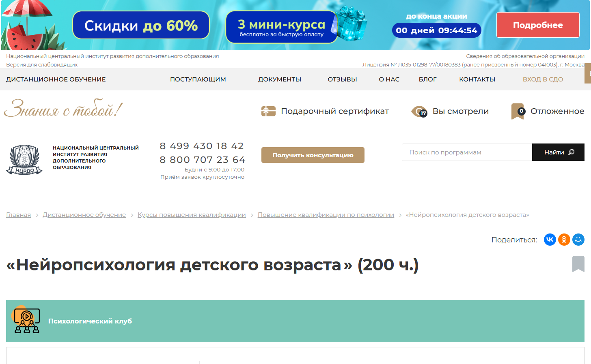
- ✅ Официальный сайт: ncrdo.ru
- 💸 Цена: 20 600 ₽ ( полная цена 26 800 ₽)
- 💳 Рассрочка: 1 717 ₽ в месяц на 12 месяцев, без переплат
- 📚 Формат: дистанционный формат с применением дистанционных образовательных технологий: аудиолекции, тесты, практические задания, доступ к ЭБС и библиотеке ЛитРес
- ⏳ Продолжительность: 2 месяца (200 часов)
- 📜 Документ: удостоверение о повышении квалификации установленного образца
- 📝 Трудоустройство: HR-консультации, помощь в трудоустройстве в крупные компании РФ
- 🔷 Для кого подходит курс: детскому психологу, клиническому психологу, специалистам в области коррекции нарушений развития, педагогам, прошедшим профессиональную переподготовку
Особенности:
Курс разработан специально для специалистов, которые хотят углубить знания в области детской нейропсихологии и освоить нейропсихологическую диагностику и коррекцию. Обучение проходит в дистанционном формате, что позволяет совмещать учебу с работой. Программа ориентирована на практикующих психологов, педагогов и дефектологов. Вся теоретическая база подана в сжатом, понятном формате без перегрузки информацией. Задания легко встроить в график обучения. По завершении обучения слушатели умеют проводить нейропсихологическую помощь детям с нарушениями высших психических функций и консультировать родителей. После прохождения курса сведения о документе вносятся в ФИС ФРДО.
Чему учатся студенты:
- Изучать клиническую нейропсихологию и структуру мозга ребенка
- Оценивать нейропсихологические отклонения и разрабатывать методы коррекции
- Применять методы нейропсихологической диагностики
- Проводить нейропсихологическую коррекцию детей с когнитивными нарушениями
- Взаимодействовать с родителями и давать рекомендации по работе с ребенком
Преподаватели:
- Мельникова Елена Васильевна — опыт с 2010 года
- Тышкевич Марина Юрьевна — опыт с 2006 года
- Шевченко Дария Игоревна — опыт с 2018 года
- Салихова Мария Романовна — опыт с 2007 года
Преимущества:
- Возможность пройти курс с нуля в дистанционном формате
- Выдается диплом о повышении квалификации, зарегистрированный в ФИС ФРДО
- Аудиолекции профессионального диктора — можно учиться в пути
- Доступ к методическим материалам, вебинарам и дополнительным источникам
- Профессиональные преподаватели с опытом клинической практики
- Программа соответствует профстандартам и требованиям ФГОС
- Гибкий учебный график и неограниченные попытки прохождения тестов
- Подарок — доступ к библиотеке ЛитРес
Отзывы учеников:
Слушатели отмечают удобство дистанционного формата, глубокую проработку нейропсихологических методик и практическую направленность курса. По отзывам на Яндекс (1274 отзыва, рейтинг 5.0), Google (538 отзывов, рейтинг 4.8) и других площадках, чаще всего выделяют индивидуальный подход, актуальность информации и поддержку преподавателей.
Перейти на официальный сайт курсаБесплатные курсы обучения на нейропсихолога
Детский логопед (Бесплатные видеокурсы) – Бесплатные онлайн курсы для логопедов, нейропсихологов, дефектологов, педагогов и родителей
✅ Официальный сайт: t.me/deti_videokurs
Описание и особенности:
- Обучение проходит в дистанционном формате с доступом к видеокурсам от клинических психологов и логопедов.
- Раз в месяц публикуется новый онлайн курс с упором на нейропсихологическую диагностику, коррекцию и реабилитацию детей.
- Курсы охватывают нейропсихологию детского возраста и методы коррекции нарушений высших психических функций.
- Слушателям доступны современные нейропсихологические методики и практические задания, разработанные с учётом профессиональных стандартов.
- Форматы обучения позволяют получить необходимые навыки без отрыва от работы и в любом удобном графике.
- Платформа предлагает образовательные программы с акцентом на профессиональную переподготовку в профессиях детского нейропсихолога и психолога.
- Завершения курса подтверждается выдачей документов установленного образца.
- Курсы подходят как педагогам и специалистам, так и родителям, заинтересованным в профессиональном росте или обучении ребёнка.
- Образовательный процесс включает изучение методов диагностики, коррекции и основ клинической нейропсихологии.
Как найти своё предназначение и любимое дело – Нейрософия
✅ Официальный сайт: neurosofia.ru
Описание и особенности:
- Бесплатный мастер-класс помогает участникам определить своё призвание и найти дело, приносящее удовольствие и доход.
- Формат – 90 минут живого общения с основателем направления, нейропсихологом Артуром Кудрявцевым.
- В программе мастер-класса — разбор ключевых ошибок в выборе профессии психолога и пути выхода из профессионального выгорания.
- Подходит тем, кто хочет освоить методы нейропсихологической диагностики, понять, как превратить хобби в профессию.
- Освещаются темы профессиональной переподготовки и возможности развиваться в сфере клинической нейропсихологии.
- Затрагиваются вопросы нейропсихологической коррекции и реабилитации с применением современных методик.
- Программа полезна для тех, кто хочет совмещать работу и обучение в дистанционном формате, с гибким графиком.
- После регистрации слушатели получают рабочую тетрадь и доступ к дополнительным материалам.
- Более 15 000 участников уже прошли мастер-класс, оставив свыше 5 000 благодарственных отзывов.
Основы нейропсихологии: диагностика и реабилитация, бесплатно – Московский институт психоанализа
✅ Официальный сайт: stepik.orgОписание и особенности:
- Курс разработан для освоения ключевых методов нейропсихологической диагностики и нейропсихологической коррекции у детей и взрослых.
- Материалы включают зарубежные и отечественные подходы, направленные на повышение уровня профессиональных навыков у специалистов.
- Обучение проходит в дистанционном формате с доступом к видеолекциям, практическим заданиям и тестам.
- Слушатели научатся выявлять нарушения высших психических функций и проводить нейропсихологическую помощь по индивидуальным программам.
- Подходит для студентов, клинических психологов, специалистов в области детской нейропсихологии, а также родственников пациентов.
- Процесс обучения сопровождается практикумом, ориентированным на клиническую нейропсихологию и методы коррекции.
- После успешного завершения курса слушателям предоставляется сертификат без оплаты и с возможностью использовать полученные знания в клинической практике.
- Программа рассчитана на 3–4 часа в неделю и доступна в любое время, что делает дистанционные курсы удобными для прохождения по индивидуальному графику обучения.
Кто такой нейропсихолог?
Нейропсихолог — это специалист, изучающий взаимосвязь между структурой и функциями головного мозга и психическими процессами человека. Его работа направлена на выявление нарушений, вызванных органическими повреждениями мозга, и разработку стратегий восстановления когнитивных и поведенческих функций.
Нейропсихология находится на стыке медицины, психологии и неврологии. Это научно-практическая область, применимая как у детей, так и у взрослых, особенно в случаях после инсульта, черепно-мозговых травм, расстройств развития и других неврологических патологий.
Что делает нейропсихолог и чем он занимается?
Основная деятельность нейропсихолога связана с диагностикой и коррекцией нарушений мозговой деятельности. Специалист проводит углублённую оценку когнитивных функций, таких как память, внимание, речь, мышление, восприятие и эмоции.
- Проведение нейропсихологического тестирования;
- Разработка индивидуальных программ коррекции и реабилитации;
- Работа в мультидисциплинарной команде с неврологами, логопедами, психиатрами;
- Помощь детям с задержками психоречевого развития, аутизмом, СДВГ;
- Сопровождение взрослых после травм, инсульта, опухолей мозга и нейродегенеративных заболеваний;
- Психопросвещение и консультирование родителей и близких пациентов.
Что должен знать и уметь нейропсихолог?
Квалифицированный нейропсихолог должен обладать как фундаментальными знаниями в области психологии и нейронаук, так и практическими навыками работы с пациентами.
- Понимание анатомии и физиологии ЦНС;
- Навыки нейропсихологического тестирования и интерпретации результатов;
- Знание методов когнитивной коррекции и нейрореабилитации;
- Способность адаптировать методики под возраст и состояние пациента;
- Коммуникационные навыки и эмпатия;
- Навыки работы с профессиональными программами и цифровыми тестами;
- Понимание клинической картины психических и неврологических заболеваний.
Востребованность и зарплаты нейропсихолога в России
На фоне растущей популярности ранней диагностики и реабилитации после неврологических заболеваний, профессия нейропсихолога становится всё более востребованной в России. Особенно высок спрос на детских нейропсихологов и специалистов, работающих с постинсультными пациентами и пациентами с деменцией.
- Средняя зарплата в частной клинике: от 80 000 до 150 000 рублей в месяц;
- В государственных учреждениях: от 50 000 до 90 000 рублей;
- В крупных городах (Москва, Санкт-Петербург): возможен доход от 200 000 рублей при высокой загрузке и индивидуальной практике;
- Онлайн-консультирование и работа в телемедицине открывают дополнительные источники дохода.
Ожидается, что в 2025–2030 годах профессия продолжит развиваться благодаря внедрению нейротехнологий и искусственного интеллекта в диагностику и реабилитацию.
Как стать нейропсихологом и где учиться?
Чтобы стать нейропсихологом, необходимо получить высшее психологическое образование и пройти дополнительную профессиональную подготовку по нейропсихологии. Желательно наличие клинической специализации.
- Бакалавриат и магистратура по направлению «Психология» или «Клиническая психология»;
- Курсы повышения квалификации и профессиональной переподготовки (600+ часов);
- Специализация по детской и взрослой нейропсихологии;
- Стажировки в реабилитационных центрах, неврологических клиниках, научных учреждениях;
- Дополнительные курсы по когнитивной терапии, работе с МРТ/ЭЭГ-данными.
Популярные образовательные учреждения в России:
- МГУ им. М.В. Ломоносова (факультет психологии);
- РГГУ (Институт психологии им. Выготского);
- НИУ ВШЭ (Факультет социальных наук);
- Санкт-Петербургский государственный университет;
- Институт практической психологии и психоанализа;
- Московский институт психоанализа и другие.
Где работает нейропсихолог?
Нейропсихологи могут работать в самых разных учреждениях, как государственных, так и частных:
- Центры нейрореабилитации;
- Детские развивающие центры и школы;
- Психоневрологические диспансеры и больницы;
- Частные клиники и кабинеты;
- Научно-исследовательские институты;
- Образовательные учреждения (в качестве преподавателей, научных сотрудников);
- Платформы онлайн-консультирования и телемедицины.
Какими качествами должен обладать хороший нейропсихолог?
Помимо профессиональных знаний, важны личностные качества:
- Терпеливость и стрессоустойчивость;
- Интерес к исследованиям и постоянному обучению;
- Умение анализировать и систематизировать данные;
- Эмпатия и этичность в работе с уязвимыми пациентами;
- Творческий подход к решению проблем и подбору методов коррекции.
Что такое обучение на нейропсихолога?
Обучение на нейропсихолога — это процесс получения дополнительного профессионального образования в области нейропсихологии. Курсы включают теоретическую базу, изучение нейропсихологических методик, практических навыков нейропсихологической диагностики и нейропсихологической коррекции. Обучение направлено на подготовку специалистов для работы с нарушениями высших психических функций у детей и взрослых.
Какие форматы обучения по нейропсихологии доступны?
Существуют различные форматы обучения — очное, заочное и дистанционное. Особенно популярным является дистанционный формат, благодаря которому прохождение курсов возможно в любом удобном графике обучения, что позволяет совмещать учебу с работой или семьей.
Чем отличается клиническая нейропсихология от детской нейропсихологии?
Клиническая нейропсихология занимается диагностикой и коррекцией нарушений психического функционирования у взрослых, часто в рамках клинической практики. Нейропсихология детского возраста или детская нейропсихология — это направление, специализирующееся на помощи детям с трудностями школьного обучения, поведения и развития.
Что включает обучение на нейропсихолога?
Обучение включает изучение основ нейропсихологии, нейропсихологических методик, методов диагностики и методов коррекции нарушений. Курсы также включают практические задания, вебинары, дополнительные материалы и психологическую практику.
Можно ли пройти нейропсихологическое обучение дистанционно?
Да, нейропсихологическое обучение можно пройти в дистанционном формате. Дистанционные образовательные программы обеспечивают доступ к учебным материалам, индивидуальным программам, электронным платформам и поддержке преподавателей.
Кому подойдут курсы по нейропсихологии?
Обучение по нейропсихологии подходит психологу, детскому психологу, медицинскому психологу, клиническому психологу и другим специалистам, желающим получить новую квалификацию или повысить профессиональные навыки в сфере нейропсихологии.
Какие документы выдаются по окончании обучения?
По успешному завершению обучения выдается диплом о профессиональной переподготовке, а также сертификаты, подтверждающие освоение нейропсихологических методик и практических навыков. Полученные дипломы соответствуют профессиональным стандартам.
Сколько длится обучение?
Сроки обучения зависят от выбранной программы: от 3 до 12 месяцев. Дистанционные курсы обычно позволяют выбрать <strongудобный график и пройти обучение <strongв любом темпе.
Какие темы изучают в рамках курса по нейропсихологии?
Темы включают основы нейропсихологии, нейропсихологическую диагностику, нейропсихологическую коррекцию, нейропсихологическую реабилитацию, методы диагностики и методы коррекции нарушений психических процессов.
Можно ли освоить профессию нейропсихолога без базового психологического образования?
Для получения квалификации нейропсихолога чаще всего требуется высшее психологическое образование. Однако некоторые образовательные организации предлагают дополнительное профессиональное обучение для специалистов смежных профессий.
Какие практические навыки развиваются в процессе обучения?
В ходе обучения проходит освоение практических аспектов, таких как проведение нейропсихологической диагностики, разработка индивидуальных программ коррекции нарушений, реабилитация пациентов с когнитивными нарушениями.
Можно ли пройти обучение по нейропсихологии онлайн?
Да, сегодня доступны дистанционные курсы с онлайн форматом. Обучение проходит на современных образовательных платформах, с доступом к учебным материалам и практическими заданиями.
Что дает профессия нейропсихолога?
Профессия нейропсихолога позволяет работать в нейропсихологическом центре, школах, клиниках, развивающих центрах, заниматься психологическим консультированием и нейропсихологической помощью детям и взрослым.
Какие направления нейропсихологии можно выбрать для изучения?
Направления нейропсихологии включают: детскую нейропсихологию, клиническую нейропсихологию, реабилитацию после травм и заболеваний, психологическую помощь при расстройствах психических функций.
Какие методы нейропсихологической диагностики используются в обучении?
Программы включают освоение таких методов, как методы нейропсихологической диагностики, тестирование высших психических функций, методы исследования памяти, внимания, мышления и когнитивных процессов.
Как проходит процесс обучения на нейропсихолога?
Процесс обучения включает лекции, вебинары, практические занятия, выполнение практических заданий, изучение теоретического материала и доступ к дополнительным материалам. Завершается обучение прохождением итоговой аттестации.
Можно ли обучиться нейропсихологии с целью смены профессии?
Да, обучение нейропсихологии подходит тем, кто хочет освоить новую профессию. После завершения курса и прохождения итоговой аттестации, выдается диплом, позволяющий начать профессиональную деятельность в области нейропсихологии.
------------------------------------------------
Реклама. Информация о рекламодателе по ссылкам в статье.